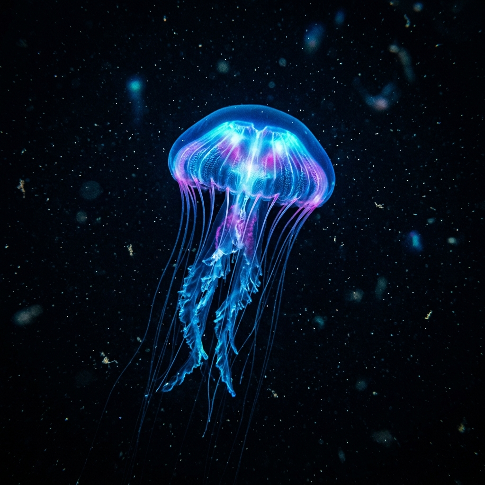
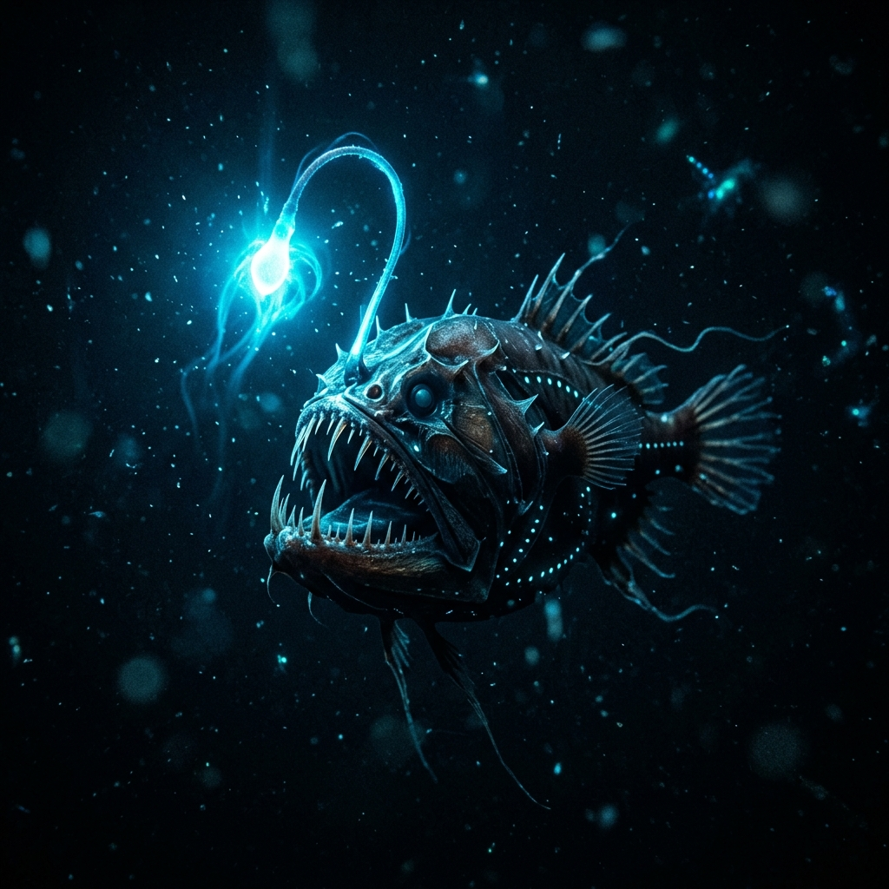
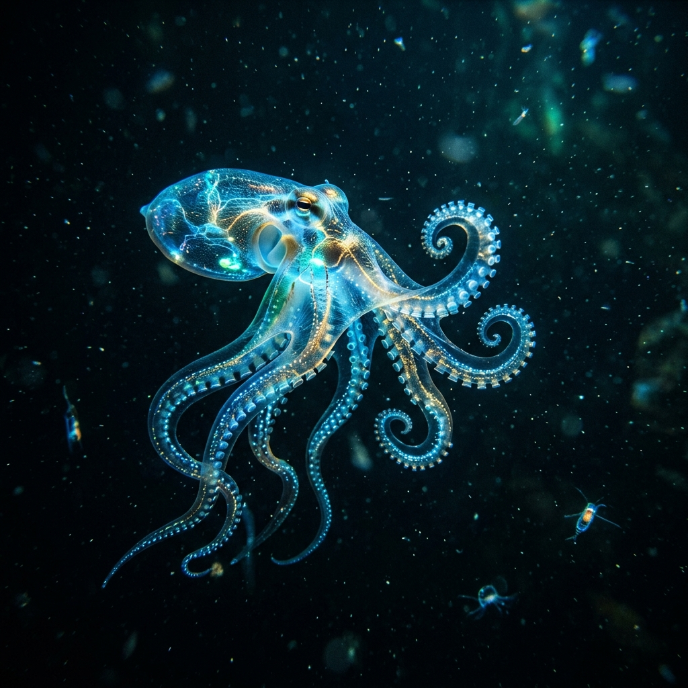
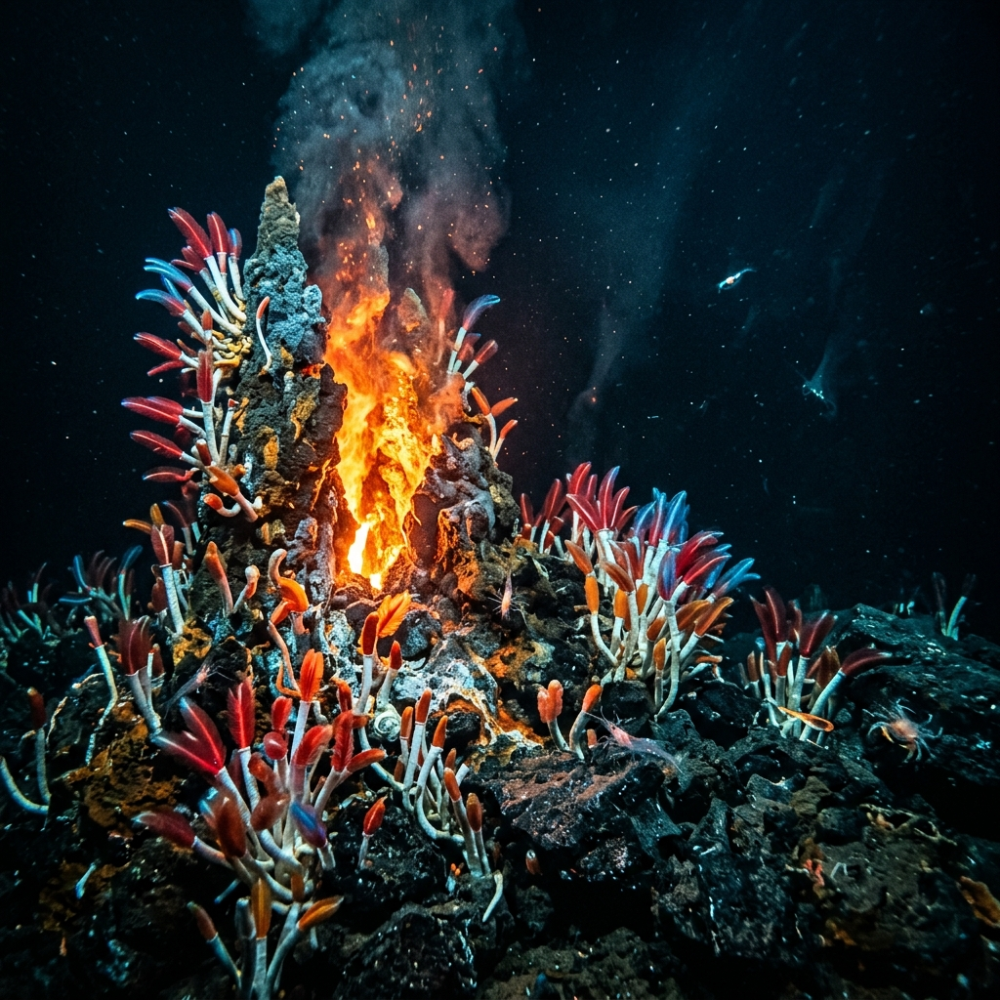

Journey into the crushing depths of the
Mariana Trench
The Light in the Darkness
At extreme depths where the sun's rays can no longer penetrate, life has found an extraordinary way to
survive. The Mariana Trench, plunging nearly 36,000 feet below the surface of the ocean, is home to
incredible creatures that generate their own light. This phenomenon, known as bioluminescence, is used to
attract prey, deter predators, and communicate in pitch blackness.




Did you know? Over 80% of the ocean is unmapped, unobserved, and unexplored. We know more
about the surface of Mars than we do about our own deep sea floors!
Creatures of the Abyss
Among the alien-like inhabitants are anglerfish with glowing lures, ghost-like jellyfish pulsating with
electric hues, and translucent octopuses that dance through the freezing waters. The pressure down here is
over 1,000 times greater than at sea level!
Fascinating Deep Sea Zones
The Twilight Zone (200m - 1,000m): Only a faint amount of light reaches here. Many
animals migrate to the surface at night to feed.
The Midnight Zone (1,000m - 4,000m): Pitch black. The only light here comes from the
glowing bioluminescence of the animals themselves.
The Abyssal Zone (4,000m - 6,000m): Near-freezing temperatures and crushing pressure.
Life is sparse but incredibly resilient.
The Hadal Zone (6,000m+): Found only in deep ocean trenches like the Mariana. Home to
the deepest known fish, the Mariana snailfish.
Secret Unlocked! The deepest point in the ocean is called the Challenger Deep. If you dropped
Mount Everest into it, the peak would still be over a mile underwater!